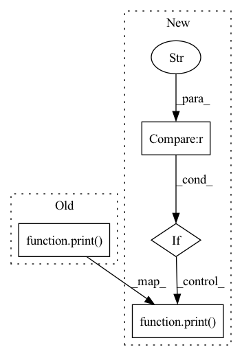

Pattern ID :1535

Before Change
f_dim, t_dim = self.get_shape(fstride, tstride, input_fdim, input_tdim)
num_patches = f_dim * t_dim
self.v.patch_embed.num_patches = num_patches
print("frequncey stride={:d}, time stride={:d}".format(fstride, tstride))
print("number of patches={:d}".format(num_patches))
new_pos_embed = self.v.pos_embed[:, 2:, :].detach().reshape(1, 1212, 768).transpose(1, 2).reshape(1, 768, 12, 101)
// if the input sequence length is larger than the original audioset (10s), then cut the positional embedding
After Change
elif audioset_pretrain == True:
if audioset_pretrain == True and imagenet_pretrain == False:
raise ValueError("currently model pretrained on only audioset is not supported, please set imagenet_pretrain = True to use audioset pretrained model.")
if model_size != "base384":
raise ValueError("currently only has base384 AudioSet pretrained model.")
device = torch.device("cuda" if torch.cuda.is_available() else "cpu")
if os.path.exists("../../pretrained_models/ast_audioset.pth") == False:
// this model performs 0.4593 mAP on the audioset eval set
audioset_mdl_url = "https://www.dropbox.com/s/cv4knew8mvbrnvq/audioset_0.4593.pth?dl=1"
wget.download(audioset_mdl_url, out="../../pretrained_models/ast_audioset.pth")
sd = torch.load("../../pretrained_models/ast_audioset.pth", map_location=device)
audio_model = ASTModel(label_dim=527, fstride=10, tstride=10, input_fdim=128, input_tdim=1024, imagenet_pretrain=False, audioset_pretrain=False, model_size="base384", verbose=False)
audio_model = torch.nn.DataParallel(audio_model)
audio_model.load_state_dict(sd, strict=False)
self.v = audio_model.module.v
self.original_embedding_dim = self.v.pos_embed.shape[2]
self.mlp_head = nn.Sequential(nn.LayerNorm(self.original_embedding_dim), nn.Linear(self.original_embedding_dim, label_dim))
f_dim, t_dim = self.get_shape(fstride, tstride, input_fdim, input_tdim)
num_patches = f_dim * t_dim
self.v.patch_embed.num_patches = num_patches
if verbose == True:
print("frequncey stride={:d}, time stride={:d}".format(fstride, tstride))
print("number of patches={:d}".format(num_patches))
new_pos_embed = self.v.pos_embed[:, 2:, :].detach().reshape(1, 1212, 768).transpose(1, 2).reshape(1, 768, 12, 101)
// if the input sequence length is larger than the original audioset (10s), then cut the positional embedding
In pattern: SUPERPATTERN
Frequency: 5
Non-data size: 4
Instances
Fragment ID: 4053645
Project Name: yuangongnd/ast
Commit Name: 481cd0acb38e73bef9ba24b5d0e5d8bf9e5ccf93
Time: 2021-07-20
Author: yuangongfdu@gmail.com
File Name: src/models/ast_models.py
Class Name: ASTModel
Method Name: __init__
Parent Class: nn.Module
Fragment ID: 4053646
Project Name: tianxiaomo/pytorch-yolov4
Commit Name: 90e0325d1ebd39c141b989e09a2a4a6b44781289
Time: 2020-05-13
Author: 1025568329@qq.com
File Name: models.py
Class Name: Conv_Bn_Activation
Method Name: __init__
Parent Class: nn.Module
Fragment ID: 4053641
Project Name: tencentyouturesearch/personreid-youreid
Commit Name: a82d51979279b93a4f34eff01d16de2af6f02b4d
Time: 2020-08-13
Author: fufuyu@tencent.com
File Name: models/baseline.py
Class Name: Baseline
Method Name: __init__
Parent Class: nn.Module
Fragment ID: 4053642
Project Name: tianxiaomo/pytorch-yolov4
Commit Name: cf7d98a55dbc4083909789d30a0fb1db04d9f0c5
Time: 2020-05-13
Author: 1025568329@qq.com
File Name: models.py
Class Name: Conv_Bn_Activation
Method Name: __init__
Parent Class: nn.Module